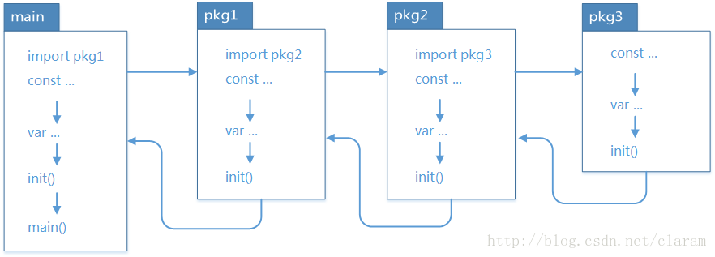
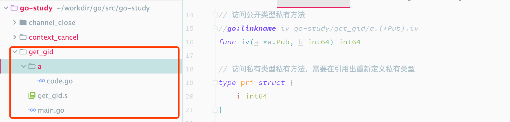
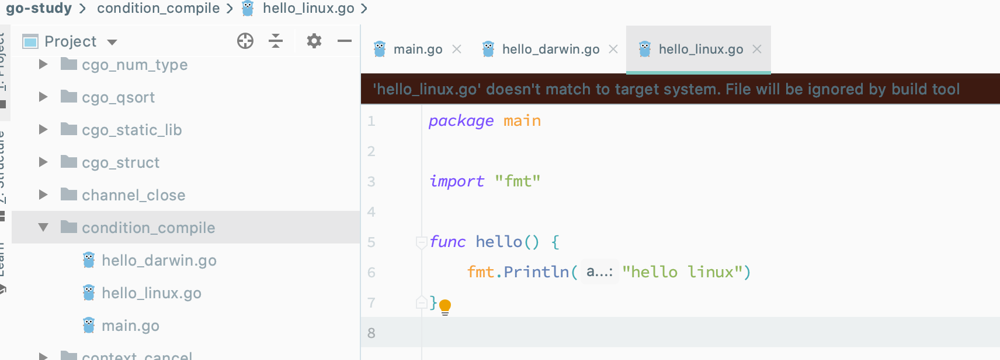
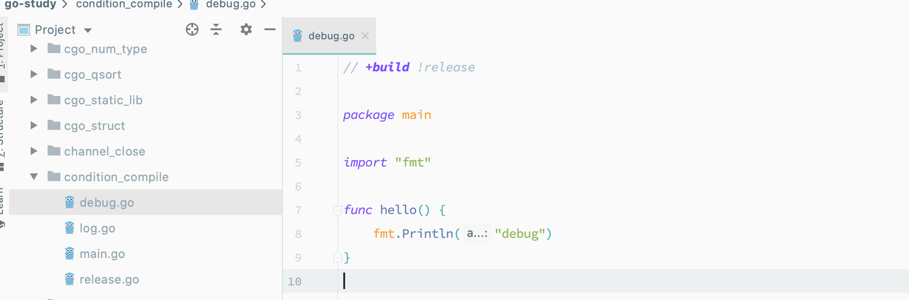
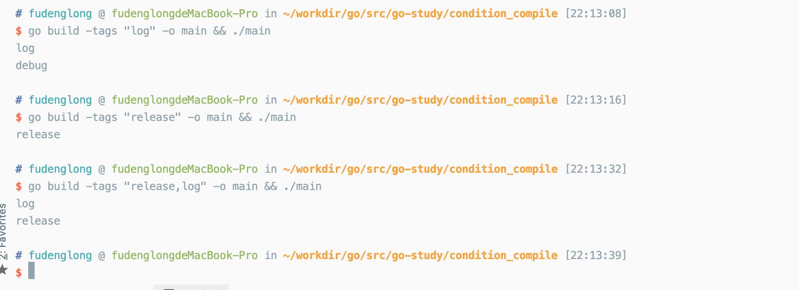

每个语言里面都有一些隐含的技巧，这些技巧在某些情况下可以极大提高生产力，利用语言的特性，提升代码效率。

切片相关
切片是 Golang 中一个非常重要的数据类型，便利的切片操作，自动扩展的特性使用起来非常方便，有点类似于 Python 的列表。
切片中追加元素
在切片中添加元素分为在后面添加，中间添加，在前面添加，有一些操作可以用于提升性能，尤其是在中间添加元素时。
1 | func Test_appendInHead(t *testing.T) { |
1 | func Test_appendInMiddle(t *testing.T) { |
在后面追加元素就比较简单了，日常操作，不解释
删除切片中元素
头部删除有两种思路，一种是将指针向后移动，另一种是将后面的数据往前面移动。
1 | func Test_deleteInHead(t *testing.T) { |
1 | func Test_deleteInMiddle(t *testing.T) { |
尾部删除元素最快，通过切片操作符直接完成大牛股
1 | func Test_deleteInTail(t *testing.T) { |
切片类型强制转换
为了安全，两个切片类型 []T 和 []Y 的底层切片类型不同时，Go 语言是无法强制转换他们的类型的，不过安全是有一定代价的，有时候这种转换是有一定价值的，例如下面告诉排序 []float64。
这里有一个知识点就是切片底层是是用 reflect.SliceHeader 表示的，也就是说所有的切片类型在运行时其实都被表示为这个。
1 | // SliceHeader is the runtime representation of a slice. |
看个快速排序 []float64 的例子：
1 | func Test_fastSortFloat64(t *testing.T) { |
defer 语句妙用
defer 语句我认为是 Go 语言的亮点之一，很容易实现资源释放以及做一些清理操作，在其他语言中，我们不得不通过 try...catch 或者 Python 中的 with 语句，等类似的方式实现。不过我们也可以通过 defer 语句的特性做一些其他的事情。
修改返回值
当函数的返回值有名称时，可以在 defer 语句中进行修改， 看下面的例子：
1 | func Test_alterReturnValue(t *testing.T) { |
本来 add(1, 6) 是7，但是我们在 defer 中将结果改为 5，达到了修改返回值的目的。
Go 初始化顺序
Go 程序的初始化和执行总是从 main.main() 函数开始的，但是如果 main 包里面导入了其他的包，则会按照顺序将他们包含到 main 包里。如果某个包被多次导入，那么在执行的时候只会导入一次。当一个包被导入时，如果还导入了其他的包，则先将其他的包包含进来，然后创建和初始化这个包的常量，再调用包里的 init() 函数。如果一个包里有多个 init() 函数，实现可能是以文件的顺序调用，同一个文件内的多个 init() 是以出现顺序依次调用的。如下图所示：

channel
channel 也是 Go 语言的一个特色数据类型，唯一并发安全的数据类型，用于在多个 goroutine 之间传递数据。channel 是用 make 初始化，可以使用 close 方法进行关闭，当通道关闭的时候，所有的接收方都会收到通知，我们可以利用这一特性，让主 goroutine 等待子 goroutine 退出，并且完成清理工作。
1 | package main |
context
Go 1.7 的时候，标准库里面增加了一个 context 包，用来简化处理单个请求的多个 goroutine 之间与请求域的数据、超时和退出等操作。下面的例子中，当并发体超时或者主动停止工作者 Goroutine 时，每个工作者都可以安全退出。
1 | package main |
go:linkname
关于 go:linkname 指令的官方解释大家可以在 https://golang.org/cmd/compile/ 找到，它的格式为：
//go:linkname localname [importpath.name]
意思是本地源文件中的 localname 使用 importpath.name 作为其符号名称，相当于 localname 软连接到了 importpath.name，利用这个特性，我们可以访问：
- 未导出的方法
- 公开类型私有方法
- 私有类型私有方法
- 私有全局变量

1 | package a |
1 | package main |
golinkname.s 是一个空的文件，用来绕过编译检查，名称可以是任意值，只要后缀为 .s 就可以。
编译指令
在使用 go build 编译Go程序是，可以通过 -gcflags 参数设定编译指令，例如可以通过添加 -gcflags="-l -N" 阻止优化和内联：
$ go build -gcflags="-l -N -m" main.go
# command-line-arguments
./main.go:10:13: ... argument does not escape
./main.go:10:14: "pid" escapes to heap
./main.go:10:30: os.Getpid() escapes to heap
./main.go:13:14: ... argument does not escape
./main.go:13:15: "now" escapes to heap
./main.go:13:15: now escapes to heap
这样就可以通过方便调试，查看汇编代码：
$ go tool objdump -s "main\.main" main
TEXT main.main(SB) /Users/fudenglong/workdir/go/src/go-study/dlv_debug/main.go
main.go:3 0x1056f60 65488b0c2530000000 MOVQ GS:0x30, CX
main.go:3 0x1056f69 483b6110 CMPQ 0x10(CX), SP
main.go:3 0x1056f6d 763b JBE 0x1056faa
main.go:3 0x1056f6f 4883ec18 SUBQ $0x18, SP
main.go:3 0x1056f73 48896c2410 MOVQ BP, 0x10(SP)
main.go:3 0x1056f78 488d6c2410 LEAQ 0x10(SP), BP
main.go:4 0x1056f7d e80e34fdff CALL runtime.printlock(SB)
main.go:4 0x1056f82 488d0597bf0100 LEAQ go.string.*+544(SB), AX
main.go:4 0x1056f89 48890424 MOVQ AX, 0(SP)
main.go:4 0x1056f8d 48c744240806000000 MOVQ $0x6, 0x8(SP)
main.go:4 0x1056f96 e8353dfdff CALL runtime.printstring(SB)
main.go:4 0x1056f9b e87034fdff CALL runtime.printunlock(SB)
main.go:5 0x1056fa0 488b6c2410 MOVQ 0x10(SP), BP
main.go:5 0x1056fa5 4883c418 ADDQ $0x18, SP
main.go:5 0x1056fa9 c3 RET
main.go:3 0x1056faa e8319dffff CALL runtime.morestack_noctxt(SB)
main.go:3 0x1056faf ebaf JMP main.main(SB)
当然，在需要发布的时候可以通过 -ldflags="-w -s" 告知链接器剔除符号表和调试信息，既可以减小文件体积，也可以稍稍增加反汇编难度。更多编译和链接指令可以通过 go tool compile --help 和 go tool link --help 查找。
交叉编译
所谓交叉编译就是可以在一个平台下编译出其他平台所需的可执行文件，对于开发者来说这是非常有帮助的。例如，我们可以在 Mac 上编译出 Windows 上的可执行文件。
# fudenglong @ fudenglongdeMacBook-Pro in ~/workdir/go/src/go-study/dlv_debug [21:17:01] C:1
$ GOOS=windows go build main.go
# fudenglong @ fudenglongdeMacBook-Pro in ~/workdir/go/src/go-study/dlv_debug [21:17:11]
$ ll
total 4152
drwxr-xr-x 5 fudenglong staff 160B Jul 19 21:17 .
drwxr-xr-x 50 fudenglong staff 1.6K Jul 2 00:07 ..
-rwxr-xr-x 1 fudenglong staff 889K Jul 19 21:12 main
-rwxr-xr-x 1 fudenglong staff 1.1M Jul 19 21:17 main.exe
-rw-r--r-- 1 fudenglong staff 48B Jul 19 21:07 main.go
# fudenglong @ fudenglongdeMacBook-Pro in ~/workdir/go/src/go-study/dlv_debug [21:17:13]
$
交叉编译缺点是不支持 CGO，但是该项目 https://github.com/karalabe/xgo 实现了支持 CGO 的跨平台编译支持。
条件编译
条件编译就是有条件的编译代码，例如，同一个函数可能在不同平台有不同的实现，那么在编译时就应该只编译所需的代码，Go语言有三种实现条件编译的方式。比较傻瓜的是就是在代码中根据 runtime.GOOS 进行区分。
另一种比较好维护的就是基于文件的条件编译，就是在源代码文件名称后面加上 GOOS 和 GOARCH 标识，都加或者只加其一，例如：

1 | package main |
1 | package main |
1 | package main |
可以通过检查编译得到不同的平台的可执行进行测试。标准库里面有很多类似这样的文件，可以通过命令 ls $(go env GOROOT)/src/runtime/sys_* 查看。
还有一种就是使用 build 编译指令，它一样可以用来区分多版本，而且控制指令更加灵活。可以添加多个 AND 指令表示 AND ，在单一指令里面，空格表示 OR，, 表示 AND，! 表示 NOT。例如：
// +build linux darwin
// +build 386,!cgo
表示：(linux OR darwin) AND (386 AND (NOT cgo))，除了 GOOS，GOARCH 外，可用条件还有编译器、版本号等。
// +build ignore
// +build gccgo
// +build go1.5
+build 编译指令需要出现在文件顶部，即包生明 package 上方，和普通的注释使用空行隔开。
最后一种，是可以通过明林行 tags 参数传递自定义标签，进行条件编译，如下：

1 | package main |
1 | // +build !release |
1 | // +build release |
1 | // +build log |

自定义标签，通过 -tags 参数传入，多个自定义标签需要使用 , 分隔，跟多信息可以查看 $(go env GOROOT)/src/go/build/doc.go 文件。
go:generate
go generate 命令会扫描源码文件，找出所有 go:genearte 注释，提取其中的命令并执行，命令形式如：
//go:generate command argument…
具有以下约束：
命令必须在
.go源码文件中命令必须以
//go:generate开头，双斜线后不能有空格；每个文件可以有多条
//go:generate指令；命令支持环境变量；
必须显示执行
go generate命令；按文件名提取命令并执行；
穿行执行，出错后终止后续命令的执行；
可以为当前文件中的命令定义别名， 仅当前文件有效，以便重复使用：
//go:generate -command LX ls -alh
//go:generate LX /var
//go:generate LX /usr